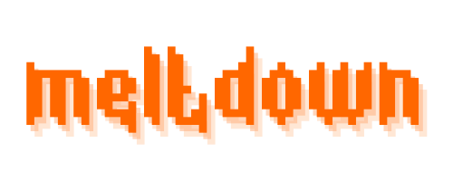

Fair, decentralised NFT auctions.
On-chain Auctions
Meltdown
Higher revenue, less frontrunning
Candle auctions are a similar to regular auctions, but nobody knows when the auction will end. They were popular in the 17th and 18th century but went out of favour as they were easily manipulated.
However, dynamically-ending auctions have many theoretical advantages over regular auctions:
- Impossible to win by "sniping"
- Faster to finalise
- Higher revenue
Secured by Chainlink
Meltdown is secured with Chainlink VRF and Keepers, ensuring the auction is fair and cannot be manipulated. The winner is decided retroactively, after the bidding period ends.